5.3 Regroupement avec CAH
A partir du moment où nous avons une matrice de distances entre toutes les paires d’individus dans notre jeu de données, nous pouvons les regrouper en fonction de leur ressemblance. Deux approches radicalement différentes existent. Soit nous pouvons diviser l’échantillon progressivement jusqu’à obtenir des groupes homogènes (méthodes divisives, telle que les K-moyennes que nous aborderons dans le module suivant), soit nous pouvons regrouper les items semblables petit à petit jusqu’à avoir traité tout l’échantillon (méthodes agglomératives, telle que la classification ascendante hiérarchique étudiée ici).
5.3.1 Dendrogramme
Le dendrogramme est une manière très utile de représenter graphiquement un regroupement. Il s’agit de réaliser un arbre dichotomique ressemblant un peu à un arbre phylogénétique qui est familier aux biologistes (par exemple ici) :

Dans l’arbre, nous représentons des divisions dichotomiques (division d’une branche en deux) matérialisant les divergences au cours de l’évolution. Dans l’arbre présenté ici, l’axe des ordonnées est utilisé pour représenter le temps et les branchements sont placées à une hauteur correspondante en face de l’axe. Le dendrogramme est une représentation similaire de la CAH avec l’axe des ordonnées indiquant à quelle distance le rassemblement se fait.
Dans R, la réalisation du dendrogramme se fait en deux étapes :
Son calcul par CAH à l’aide de la fonction
hclust()Sa représentation sur un graphique en utilisant
plot()(pour un graphique de base) ouggdendro::ggdendrogram()(pour un graphique ggplot2).
Partons, pour étayer notre raisonnement, d’une matrice de distances euclidiennes sur les données de zooplancton. Au passage, abordons quelques fonctions de R utiles dans le contexte pour préparer correctement nos données.
- A la section précédente, nous avons suggéré qu’il peut être utile de standardiser nos données préalablement si une distance de type euclidienne ou manhattan est ensuite calculée et si les données numériques sont mesurées dans des unités différentes, comme c’est le cas ici. La fonction
scale()se charge de cette standardisation colonne par colonne dans un tableau. Comme elle renvoie une matrice, nous devons ensuite retransformer le résultat endata.frameoutibble. Nous choisissons ici d’utiliser la fonctionas_tibble(). - Limitons, pour l’instant notre ambition à la comparaison de six individus. Afin d’observer tous les cas possibles dans le dendrogramme, nous ne prendrons pas les six premières lignes du tableau, mais les lignes 13 à 18. Cela peut se faire à l’aide de la fonction
slice()que nous n’avons pas encore beaucoup utilisée jusqu’ici. Cette fonction permet de spécifier explicitement les numéros de lignes à conserver, contrairement àfilter()qui applique un test de condition pour décider qulles ligne(s) converser.
Voici donc notre matrice de distances euclidiennes sur les données ainsi traitées. Les individus initiaux 13 à 18 sont renumérotés 1 à 6. Nous n’imprimons plus ici la matrice de distance obtenue car ce n’est que la première étape du travail vers une représentation plus utile (le dendrogramme).
zoo %>.%
select(., -class) %>.% # Elimination de la colonne class
scale(.) %>.% # Standardisation des 19 colonnes
as_tibble(.) %>.% # Conversion de la matrice en data.frame +tibble
slice(., 13:18) -> zoo6 # Récupération des lignes 13 à 18
zoo6 %>.%
vegan::vegdist(., method = "euclidean") -> zoo6std_distNotre objet zoo6std_dist est ensuite utilisé pour calculer notre CAH à l’aide de hclust(). Enfin, plot() (ou ggdendro::ggdendrogram()) se charge de tracer le dendrogramme.
zoo6std_dist %>.%
hclust(.) -> zoo6std_clust # Calcul du dendrogramme
plot(zoo6std_clust) # ggdendro::ggdendrogram() peut aussi être utilisé ici
Voici comment interpréter ce graphique. Les deux individus les plus semblables sont le 2 et le 5 (regroupepent effectué le plus bas, donc, avec la valeur de l’indice de dissimilarité le plus faible), également tous deux similaires au 3. Le 4 se rattache à ce groupe, mais bien plus haut sur l’axe, indiquant ainsi qu’il s’en différencie un peu plus, enfin, le 1 et le 6 sont rassemblés à un niveau à peu près équivalent. Finalement, le groupe de droite constitué des individus 2, 3, 4 et 5 et celui de gauche contenant le 1 et le 6 sont reliés encore plus haut suggérant ainsi la dissimilitude la plus forte entre ces deux groupes.
Attention : La position des individus selon l’axe horizontal n’est pas importante. Il faut voir le dendrogramme comme un mobile qui peut tourner librement. C’est-à-dire que le groupe constitué de 2, 3, 4 et 5 aurait très bien pu être placé à la gauche de celui constitué de 1 et 6. De même, le sous-groupe 2, 3 et 5 aurait très bien pu être à la gauche du regroupement avec 4 à la droite, etc.
Notez que nous n’avons pas utilisé l’information concernant les classes taxonomiques auxquelles les individus appartiennent (nous avons éliminé la variable class en tout début d’analyse). Pour cette raison, ce type de regroupement s’appelle une classification non supervisée parce que nous n’imposons pas les groupes que nous souhaitons réaliser14. Nous pouvons néanmoins révéler ces classes maintenant pour vérifier si le dendrogramme réalisé est logique (étape bien sûr facultative et souvent pas possible en pratique lorsque cette information n’est pas disponible) :
zoo$class[13:18]# [1] Egg_round Poecilostomatoid Poecilostomatoid Decapod
# [5] Calanoid Appendicularian
# 17 Levels: Annelid Appendicularian Calanoid Chaetognath ... ProtistLes individus 2, 3 et 5 (“Poecilostomatoid” ou “Calanoid”) sont des copépodes, des crustacés particulièrement abondants dans le zooplancton. Leur forme est similaire. Leur regroupement est logique. L’individu 4 est une larve de décapode, un autre crustacé. Ainsi le regroupement de 2, 3 et 5 avec 4 correspond aux crustacés ici. Enfin, les individus 1 et 6 sont très différents puisqu’il s’agit respectivement d’un œuf rond probablement de poisson et d’un appendiculaire.
5.3.2 Séparer les groupes
Si notre dendrogramme est satisfaisant (nous le déterminons en l’étudiant et en vérifiant que le regroupement obtenu a un sens biologique par rapport à l’objectif de notre étude), nous concrétisons le regroupement en coupant l’arbre à une certaine hauteur à l’aide de la fonction cutree(). Nous pouvons matérialiser ce niveau de coupure en traçant un trait horizontal rouge avec abline(h = XXX, col = "red") pour le graphe de base, ou en ajoutant + geom_hline(yintercept = XXX, col = "red") au graphique ggplot2, avec ‘XXX’ la hauteur de coupure souhaitée. Par exemple, si nous voulons réaliser deux groupes, nous ferons :
plot(zoo6std_clust)
abline(h = 8, col = "red")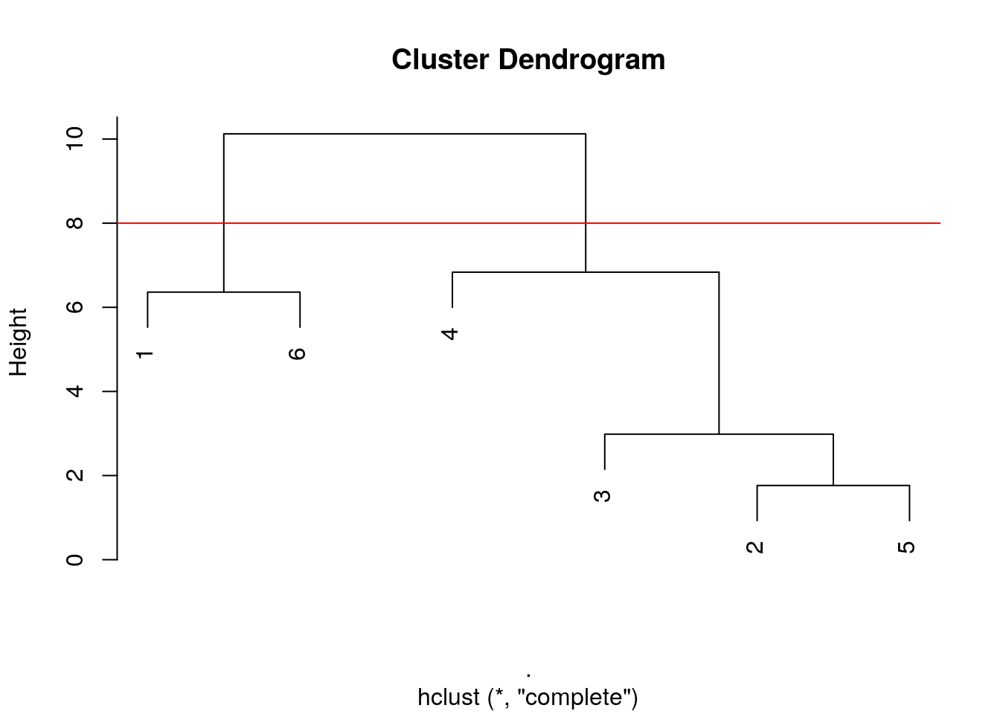
Pour réaliser trois groupes, nous couperons plus bas (ici version ggplot2) :
ggdendro::ggdendrogram(zoo6std_clust) +
geom_hline(yintercept = 6.5, col = "red")
Et ainsi de suite. A mesure que la hauteur de coupure descend, nous réaliserons quatre, puis cinq groupes. Quel est le meilleur niveau de coupure ? Il n’y en a pas un seul forcément car les différents niveaux correspondent à un point de vue de plus en plus détaillé du regroupement. Néanmoins, lorsque le saut sur l’axe d’un regroupement à l’autre est fort, nous pouvons considérer une séparation des groupes d’autant meilleure. Cela crédibilise d’autant le regroupement choisi. Ainsi la séparation en deux groupes apparait forte (entre 10,2 et 7,4, sur un intervalle de 2,8 unités donc). De même, la séparation de l’individu 4 par rapport au groupe constitué de 2, 3 et 5 se fait sur un intervalle de 4,7 unités (entre 7,4 et 2,7). En comparaison, la séparation de l’individu 3 du groupe 2 et 5 est nettement moins nette puisqu’elle apparait aux hauteurs entre 2,7 à 2.4, soit seulement sur un intervalle de 0,3 unités. Ces mesures d’intervalles n’ont aucune valeur absolue. Il faut les considérer uniquement de manière relatives les unes par rapport aux autres, et seulement au sein d’un même dendrogramme.
Ici, deux niveaux de coupure se détachent. Nous utilisons aussi la fonction rect.hclust() pour matérialiser ces groupes sur le dendrogramme, et cutree() pour obtenir une nouvelle variable que nous pourrons ajouter dans notre tableau de données qui concrétise le regroupement choisi :
- en deux groupes, nous avons les crustacés séparés des autres.
plot(zoo6std_clust)
abline(h = 8, col = "red")
rect.hclust(zoo6std_clust, h = 8, border = c("blue", "red"))
(group2 <- cutree(zoo6std_clust, h = 8))# [1] 1 2 2 2 2 1Les individus 1 et 6 sont dans le groupe 1, et les autres dans le groupe 2.
- en quatre groupes, nous avons les copépodes séparés des trois autres items chacun dans un groupe séparé.
plot(zoo6std_clust, hang = -1) # Prolonger les tiges jusqu'en bas
abline(h = 5, col = "red")
rect.hclust(zoo6std_clust, h = 5, border = c("blue", "blue", "blue", "red"))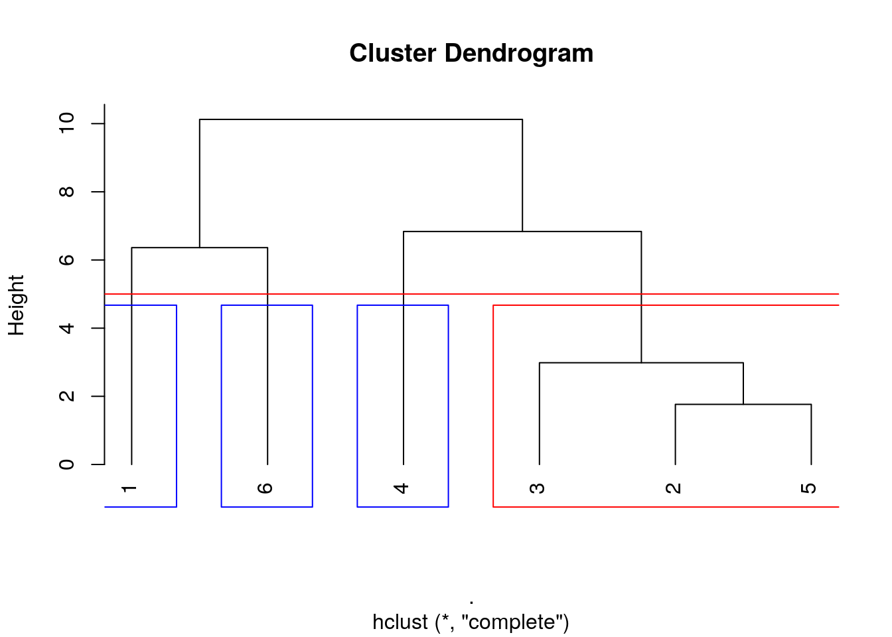
Le groupe des individus 2, 3 et 5 est encadré en rouge. Les trois autres groupes des individus uniques 1, 6 et 4 respectivement sont ici encadrés en bleu.
(group4 <- cutree(zoo6std_clust, h = 5))# [1] 1 2 2 3 2 4L’individu 1 est dans le groupe 1, les individus 2, 3 et 5 sont dans le groupe 2, l’individu 4 est dans le groupe 3 et enfin l’individu 6 est dans le groupe 4. Donc, cutree() numérote ses groupes en fonction du premier item présent dedans dans l’ordre du tableau de données.
Nous pouvons rajouter ces regroupements dans le tableau de données, et utiliser cette information pour en faire d’autres choses utiles. Par exemple, nous représentons un nuage de point des données et colorons nos points en fonction du premier regroupement effectué comme suit :
zoo6$group2 <- as.factor(group2) # Utiliser une variable facteur ici
chart(zoo6, area ~ circularity %col=% group2) +
geom_point()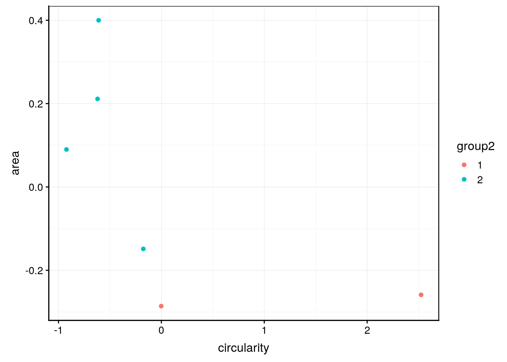
Nous voyons que les copépodes (groupe 2 en turquoise) sont plus grands (area) et moins circulaires (circularity) que les deux autres particules du groupe 1 en rouge. Nous pouvons ainsi réexplorer nos données en fonction du regroupement pour mieux le comprendre.
5.3.2.1 Méthodes de CAH
Tant que l’on compare des individus isolés entre eux, il n’y a pas d’ambiguïté. Par contre, dès que nous comparons un groupe avec un individu isolé, ou deux groupes entre eux, nous avons plusieurs stratégies possible pour calculer leurs distances (argument method = de hclust()) :
- Liens simples (single linkages en anglais)
hclust(DIST, method = "single"): la distance entre les plus proches voisins au sein des groupes est utilisée.
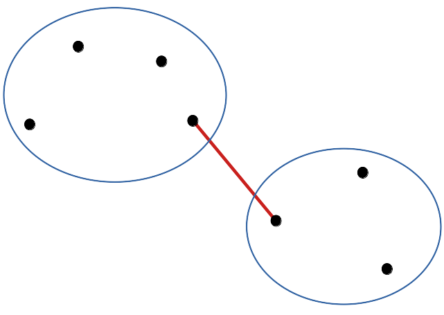
zoo6std_dist %>.%
hclust(., method = "single") %>.%
plot(.)Les données tendent à être aggrégées de proche en proche en montrant une gradation d’une extrême à l’autre. Dans le cas d’une variation progressive, par exemple lors d’un passage graduel d’une situation A vers une situation B le long d’un transect, le dendrogramme obtenu à l’aide de cette méthode représentera la situation au mieux.
- Liens complets (complete linkages)
hclust(DIST, method = "complete"), méthode utilisée par défault si non précisée : la distance entre les plus lointains voisins est considérée. C’est le dendrogramme que nous avons obtenu au début.
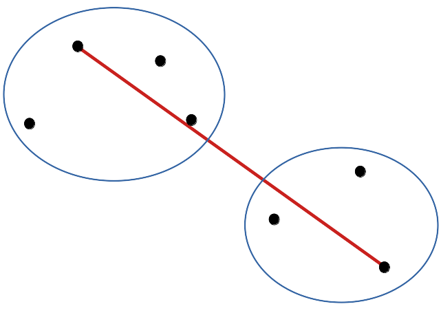
Le dendrogramme a tendance à effectuer des groupes séparés plus nettement les uns des autres qu’avec les liens simples.
- Liens moyens (group-average)
hclust(DIST, method = "average")encore appelée méthode UPGMA : moyenne des liens entre toutes les paires possibles intergroupes.

Nous obtenons une situation intermédiaire entre liens simples et liens moyens.
zoo6std_dist %>.%
hclust(., method = "average") %>.%
plot(.)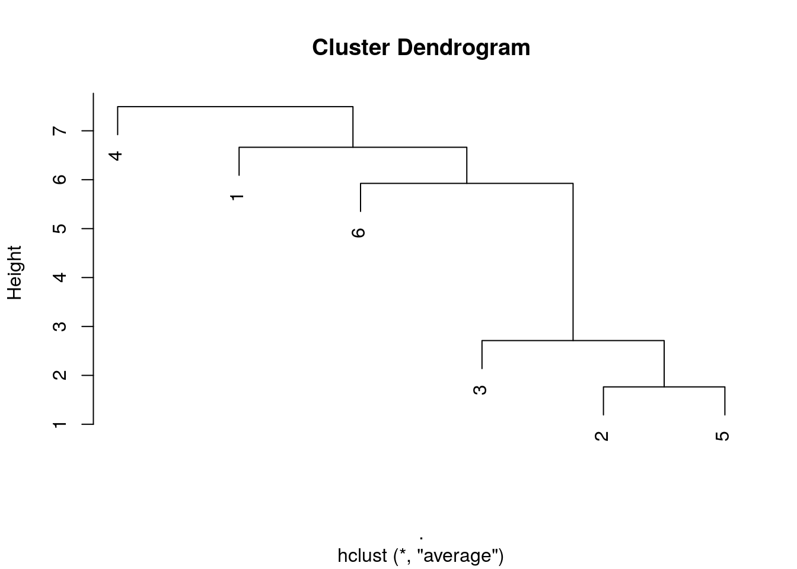
Dans ce cas-ci, le résultat est similaire aux liens simples, mais ce n’est pas forcément le cas à chaque fois.
- Méthode de Ward
hclust(DIST, method = "ward.D2"). Considérant le partitionnement de la variance totale du nuage de points (on parle aussi de l’inertie du nuage de points) entre variance interclasse et variance intraclasse, la méthode vise à maximiser la variance interclasse et minimiser la variance intraclasse, ce qui revient d’ailleurs au même. Cette technique fonctionne souvent très bien pour obtenir des groupes bien individualisés.
zoo6std_dist %>.%
hclust(., method = "ward.D2") %>.%
plot(.)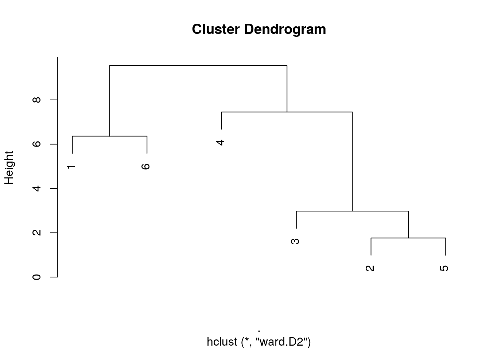
Ici nous obtenos un dendrogramme très proche des liens complets. Encore une fois, ce n’est pas forcément le cas dans toutes les situations.
- Liens médians, centroïdes, …, constituent encore d’autre méthodes possibles, mais moins utilisées. Elles ont l’inconvénient de produire parfois des inversions dans le dendrogramme, c’est-à-dire qu’un regroupement plus avant se fait parfois à une hauteur plus basse sur l’axe des ordonnées, ce qui rend le dendrogramme peu lisible et beaucoup moins esthétique. Dans notre exemple, la méthode centroïde crée une telle inversion à la hauteur de 5 environ sur l’axe des ordonnées entre l’individu 6 et l’individu 1. Alors, qui est regroupé en premier ? Pas facile à déterminer dans ce cas !
zoo6std_dist %>.%
hclust(., method = "centroid") %>.%
plot(.)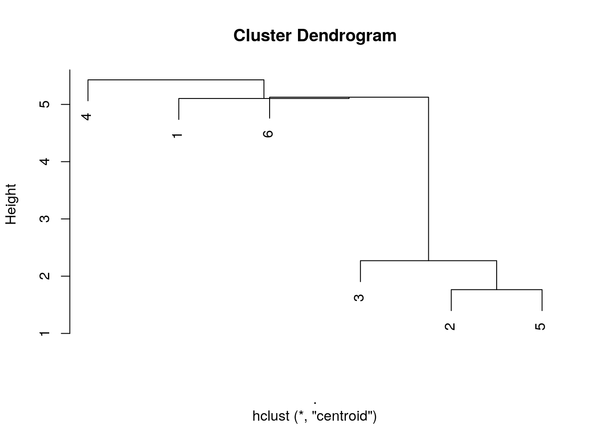
5.3.3 Étude complète
Voici ce que cela donne si nous effectuons une CAH sur le jeu zooplancton complet avec ses 1262 lignes.
zoo %>.%
select(., -class) %>.% # Elimination de la colonne class
scale(.) %>.% # Standardisation des 19 colonnes
as_tibble(.) %>.% # Transformation en data.frame + tibble
vegan::vegdist(., method = "euclidean") %>.% # Matrice de distances
hclust(., method = "ward.D2") -> zoo_clust # CAH avec Ward
plot(zoo_clust, labels = FALSE) # Dendrogramme sans labels des individus
abline(h = 70, col = "red") # Séparation en 3 groupes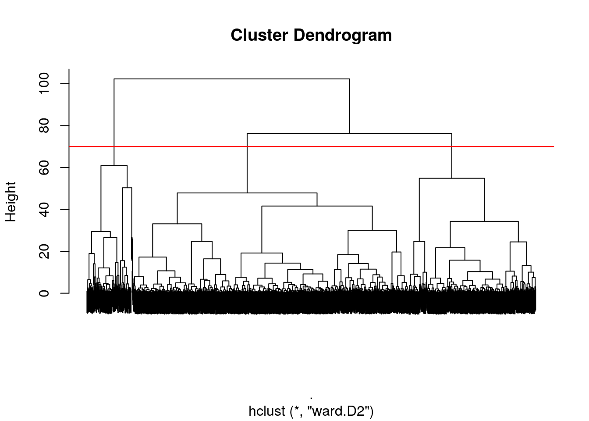
Naturellement, avec 1262 branches, notre dendrogramme est très encombré ! Cependant, il reste analysable tant que nous nous intéressons aux regroupements de plus haut niveau (vers le haut du dendrogramme). Notez comme les vlaeurs sur l’axe des ordonnées ont changé par rapport à nos cas simple à six items (ne jamais comparer les hauteurs entre dendrogrammes différents).
Notre CAH est terminée, mais nous pouvons matérialiser le regroupement sous forme d’une variable supplémentaire dans le tableau et l’utiliser ensuite.
zoo_clust %>.%
cutree(., h = 70) %>.% # Matérialisation des groupes
as.factor(.) -> # Conversion en variable facteur
zoo$Groupes # Ajout au tableau comme variable Groupes
chart(zoo, compactness ~ ecd %col=% Groupes) +
geom_point() + # Exploration visuelle des groupes (exemple)
coord_trans(x = "log10", y = "log10") # Axes en log10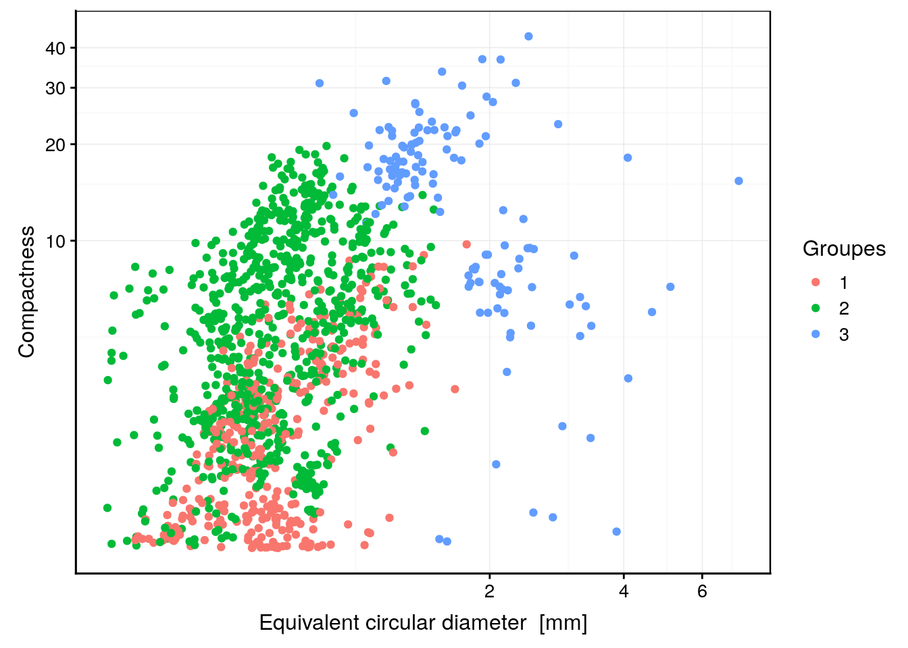
Et de manière optionnelle, si un classement est disponible par ailleurs (c’est le cas ici avec la variable class), nous pouvons réaliser un tableau de contingence à double entrées entre le regroupement obtenu et le classement pour comparaison.
table(zoo$class, zoo$Groupes)#
# 1 2 3
# Annelid 31 13 6
# Appendicularian 0 36 0
# Calanoid 9 237 42
# Chaetognath 0 17 34
# Cirriped 1 21 0
# Cladoceran 47 3 0
# Cnidarian 3 5 14
# Cyclopoid 0 50 0
# Decapod 121 5 0
# Egg_elongated 2 48 0
# Egg_round 44 0 5
# Fish 4 46 0
# Gastropod 48 2 0
# Harpacticoid 0 39 0
# Malacostracan 27 66 28
# Poecilostomatoid 20 136 2
# Protist 0 50 0Ainsi, nous pouvons constater que le groupe 1 contient une fraction importante des annélides, des cladocères,des décapodes, des œufs ronds et des gastéropodes. Le groupe 2 contient un maximum des copépodes représentés par les calanoïdes, les cyclopoïdes, les harpacticoïdes et les poecilostomatoïdes. Il contient aussi tous les appendiculaires, tous les protistes, presque tous les œufs allongés, les poissons, et une majorité des malacostracés. Enfin, le groupe 3 contient une majorité des chaetognathes et des cnidaires. Le regroupement a été réalisé uniquement en fonction de mesures effectuées sur les images. Il n’est pas parfait, mais des tendances se dégagent tout de même.
Pour en savoir plus
- La vidéo suivante présente la matière que nous venons d’étudier de manière légèrement différente. Plus d’explications sont également apportées concernant la méthode de Ward.
Une autre explication encore ici.
Pour bien comprendre la façon dont une CAH est réalisée, il est utile de détailler le calcul étape par étape sur un exemple simple. Voici une matrice de distances euclidiennes fictive entre 6 stations :
A B C D E B 15 C 6.4 10.86 D 5.2 13.04 5.48 E 5.1 12.37 7.28 7.81 F 10.39 7.42 5.57 9.64 9.49
Effectuons une CAH manuellement par liens complets et traçons le dendrogramme correspondant.
Etape 1 : Nous repérons dans la matrice de distance la paire qui a l’indice de dissimilarité le plus petit et effectuons un premier regroupement. A_E = groupe I à la distance 5,1. La matrice de distances est simplifiées par rapport à ce groupe I en considérant la règle utilisée (ici, liens complets, donc on garde la plus grande distance entre toutes les paires possibles lorsqu’il y a des groupes).
* Distance entre B et I = B_A = 15
* Distance entre C et I = C_E = 7,28
* Distance entre D et I = D_E = 7,81
* Distance entre F et I = F_A = 10,39Matrice de distance recalculée :
| I | B | C | D | |
|---|---|---|---|---|
| B | 15.00 | |||
| C | 7.28 | 10.86 | ||
| D | 7.81 | 13.04 | 5.48 | |
| F | 10.39 | 7.42 | 5.57 | 9.64 |
Etape 2 : on répète le processus. C_D = groupe II à la distance 5,48.
* Distance entre I et II = I_D = 7,81
* Distance entre B et II = B_D = 13,04
* Distance entre F et II = F_D = 9,64Matrice de distance recalculée :
| I | B | II | |
|---|---|---|---|
| B | 15.00 | ||
| II | 7.81 | 13.04 | |
| F | 10.39 | 7.42 | 9.64 |
Etape 3 : B_F = groupe III à la distance 7,42
* Distance entre I et III = I_B = 15
* Distance entre II et III = II_B = 13,04Matrice de distance recalculée :
| I | III | |
|---|---|---|
| III | 15.00 | |
| II | 7.81 | 13.04 |
Etape 4 : I_II = groupe IV à la distance 7,81
* Distance entre III et IV = III_I = 15Matrice de distance recalculée :
| III | |
|---|---|
| IV | 15 |
Etape 5 : III - IV = groupe V à la distance 15.
fini !
Voici le dendrogramme résultant :
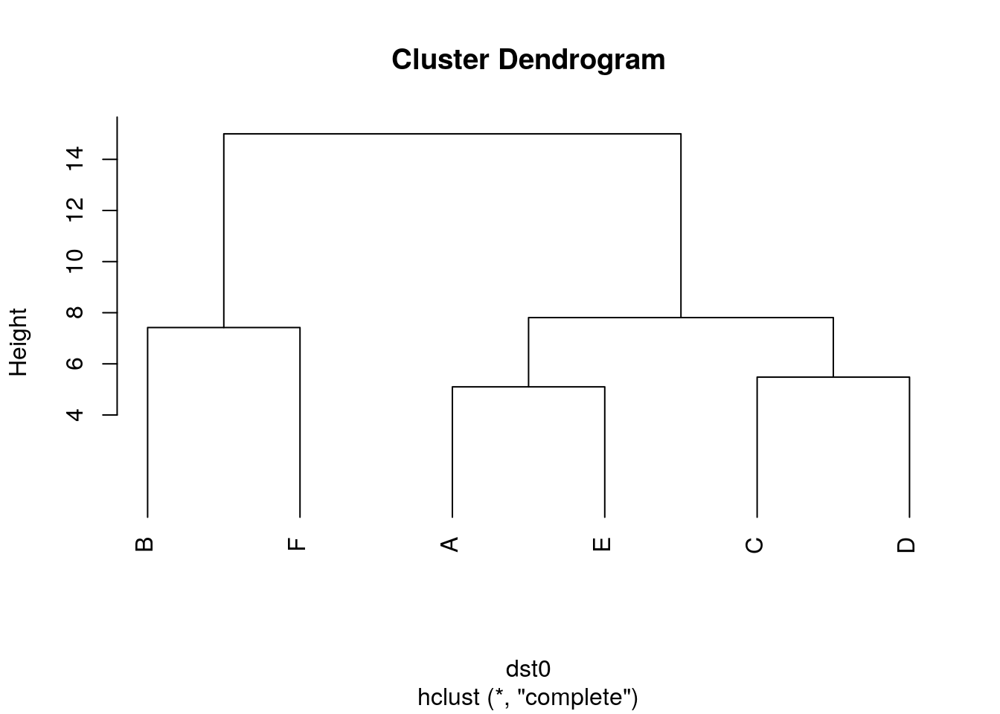
Les techniques complémentaires de classification supervisées, recommandées dans le cas du jeu de données zooplancton seront abordées dans le cours de Science des Données Biologiques III l’an prochain.↩